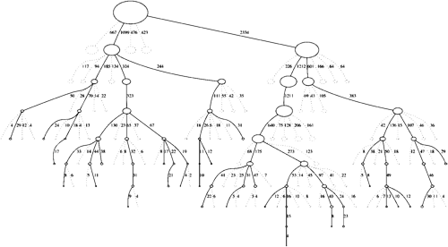

Welcome to the Monte Carlo Tree Search (MCTS) research hub.
The aim of this site is to provide a convenient reference point for MCTS material on the internet, to aid researchers in the area.

This site was originally set up as an initiative of the £1.5m EPSRC project UCT for Games and Beyond.